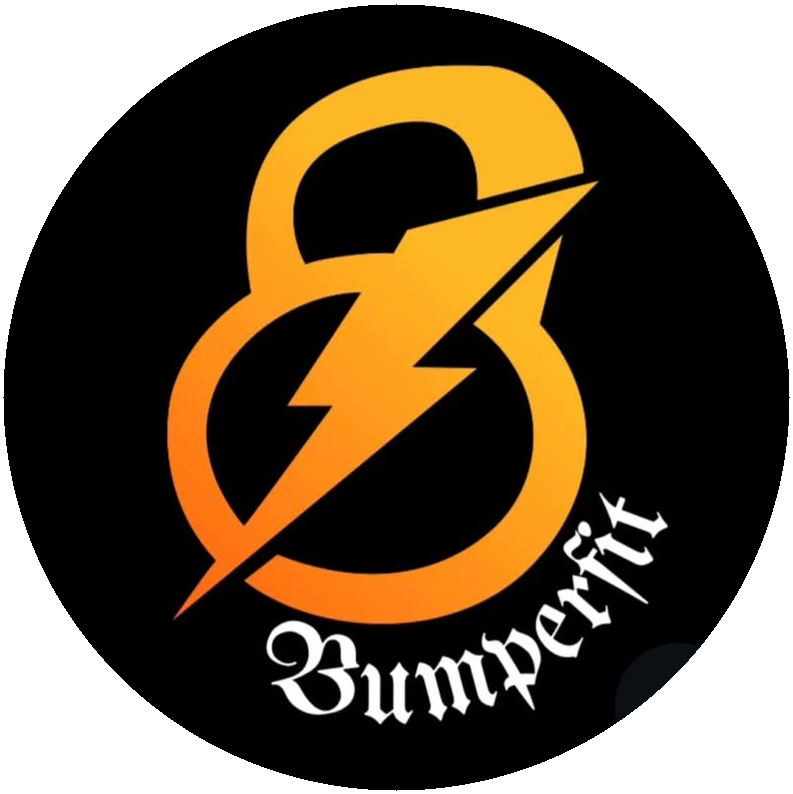

Esta app se creó con el fin de dar variabilidad a los trabajos finalizadores y de entrada en calor/vuelta a la calma. No reemplazan tu entrenamiento.
Creada por @leo.lovera y @bumper.fit
Ingresá tu email
¿No tenés cuenta?
Una vez registrado debés esperar que el administrador apruebe tu acceso.
Cuenta pendiente
Tu registro está esperando aprobación.
Te vamos a avisar apenas puedas entrar a la app.
¿No te llegó el mail?
Formato
Tiempo de trabajo
Dificultad
Tipo
¿Qué querés mejorar?